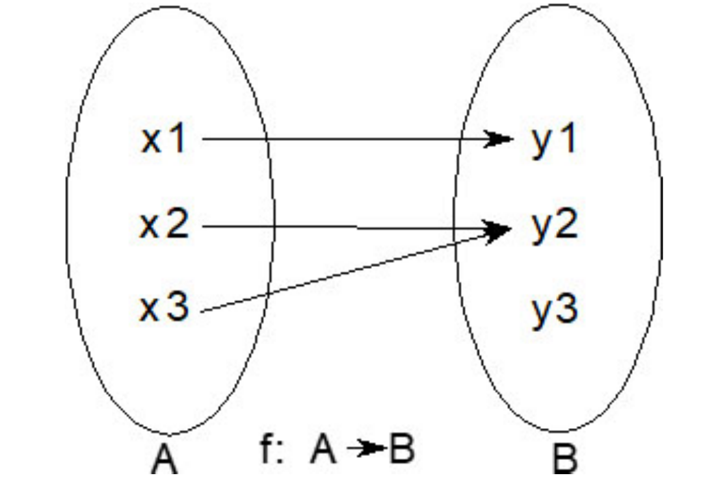
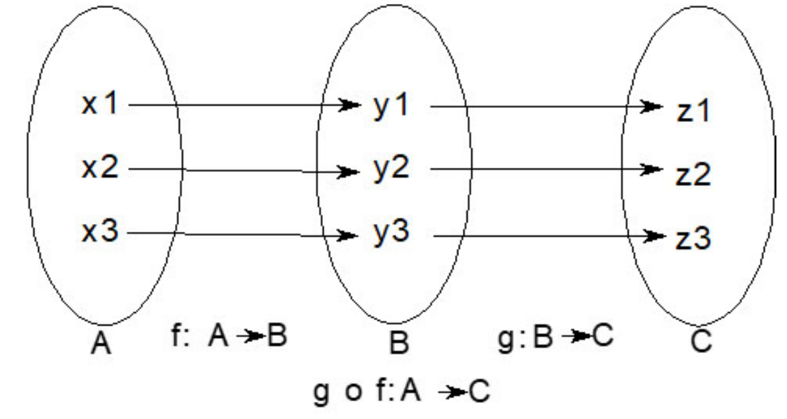

编程风格
相较于科学，编程更是一门艺术。大多数程序员都以自己的手艺为傲。他们会在一段时间内掌握一种艺术，并在职业生涯的相当长的一段时间内获得一种编程风格的专业知识。习惯于命令式编程或面向对象编程的人可能会对Julia感到困惑。本章将使我们熟悉这些差别。
背景知识
Julia有很多类似于Lisp的特性。同时，它也有足够的结构用于命令式编程风格。虽然计算机程序员更喜欢命令式的编码风格，但数学家和研究人员更喜欢函数式编程，因为它可以轻松地将程序表示为数学函数。我们将在后面深入研究其中的差异。
形成代码编写的一般指南和风格，有助于维护代码库。一个可能的例子是编码标准、函数约定和变量命名。与Python等语言不同，Julia在语法上不依赖于空格位置。这意味着一个人可以很容易地写出其他程序员很难读懂的代码。Julia社区在将代码签入到Julia GitHub库时遵循严格的建议或实践。大多数Julia程序员倾向于在他们的代码中接受并遵循它。我们将在介绍为可维护性编写代码时讨论其中的一些方面。
可维护性指南
软件行业的经典需求分类之一是FURPS：
- 功能（Functionality）
- 实用（Uasbility）
- 可靠（Reliability）
- 性能（Performance）
- 支持（Supportability）
支持在这里尤其重要，因为良好的支持要求代码可读。编码约定为大规模的开发人员搭建桥梁。Julia文档给出了样式指南。
使用函数：基于REPL的语言很容易被误认为是脚本语言。动态类型，所有代码都在一个全局作用域(
Main模块)中编写，使该语言具有脚本语言的味道。然而，使用适当的函数可以使代码具有可维护性；此外，由于函数可以以类型安全的方式编写，因此可以更好地优化它们。代码必须是泛化的，而不是类型特定的：这个概念可以很容易地用下面的代码来解释：
julia> addone(x) = x + one(x);julia> addone(5), addone(5.0), addone(5f0)(6, 6.0, 6.0f0)
Julia有许多类似one()和zero()的方法，它们使用运算数的类型，并明智地提供不需要在计算中显式提升类型的值。同样的原则也可以应用到你的代码中，使其易于扩展。
- 如果必要则保持函数范围狭窄：当函数参数需要特定类型时，必须指定该类型。这确保运行时错误不会进一步传播，并且不需要额外的断言。
julia> calc1() = 2, 1calc1 (generic function with 1 method)julia> calc2() = 1.1, 1.2calc2 (generic function with 1 method)julia> myvalidate(x::Int, y::Int) = x == ymyvalidate (generic function with 1 method)julia> myvalidate(calc1()...)falsejulia> myvalidate(calc2()...)ERROR: MethodError: no method matching myvalidate(::Float64, ::Float64)
calc1()是正确的类型，calc2()是错误的，myvalidate()确保错误是本地化的。其次，如果需要，任何显式的类型转换都必须由调用方而不是被调用方执行。
julia> function myvalidate2(x, y) xi, yi = Int(x), Int(y) return xi == yi endmyvalidate2 (generic function with 1 method)julia> myvalidate2(2, 3.0) # Not good stylefalsejulia> myvalidate(2, Int(3.0)) # Better stylefalse
- 在修改参数的函数后面附加感叹号(
!)：当参数值被修改时，函数名应该有一个明确的感叹号指示符。这一点将在后面几节中进一步阐明。
julia> function double!(v::Vector) for i=firstindex(v):lastindex(v) v[i] *= 2 end return v enddouble! (generic function with 1 method)julia> double!([1,2,3])3-element Vector{Int64}: 2 4 6
避免复杂的数据类型：特别是与集一起使用的数据类型必须保持简单。
Vector{Union{Int, Float, Function, MyType}}最好指定为Vector{Any}。对于编译器来说，拥有更简单的类型可能会更高效。类似地，Union{Function, AbstractString}在代码中可能不是适合的设计选择。命名约定：Julia编码人员习惯某些命名约定。下面是一些例子：
类型以大写字母开头，可以是驼峰形式：
MyType，AbstractArray{T}，等等。模块名称遵循与常规类型相同的约定。
函数必须全部小写。
带有合并单词的简单谓词：
beginwith，isequal，haskey等。较长的名称，特别是多用途函数，用下划线(
_)分隔：remotecall_fetch()。
全局常数或环境变量全部大写：ENV。
使用与
Base匹配的函数参数：下面是一些常用的实践。- 当函数或匿名函数用作实参时，最好将它们放到形参的开头，这样就可以实用
function...do语法。
- 当函数或匿名函数用作实参时，最好将它们放到形参的开头，这样就可以实用
julia> mymap(f, arr) = f.(arr)mymap (generic function with 1 method)julia> mymap([1, 2, 3]) do x 2x end3-element Vector{Int64}: 2 4 6
类似地，
Vararg形参出现在函数实参的末尾。IO参数通常是函数的第一个参数。::Type{T}形参构成函数的第一个实参。明智地使用静态参数：只有在实际需要时才推荐使用静态参数。
julia> double(x::T) where {T<:Real} = 2xdouble (generic function with 1 method)julia> double(x::Real) = 2xdouble (generic function with 1 method)
两种方法是等价的。只创建了一个方法，第二个方法覆盖了第一个方法。methods()调用将只列出一个方法。尽管声明了形参T，但在函数体中没有使用，因此被认为是多余的并被优化掉了。
julia> methods(double)# 1 method for generic function "double": [1] double(x::Real) in Main at REPL[2]:1
但是，下面的方法是一个非常相关的方法。
julia> myeltype(v::Vector{T}) where {T<:Real} = Tmyeltype (generic function with 1 method)julia> myeltype([1.0, 2, 3])Float64
仅在需要时使用匿名函数：当你需要一个函数而不污染名称空间时，匿名函数非常有用。其次，它们是
function...do语法一个非常干净的接口。然而，当函数已经有一个定义的名称时，则不必将函数包装在匿名函数中。例如，map(f, array)优于map(x->f(x), array)。不要为定义良好的数据类型重载
Base方法：下面的代码将说明这一思想。
julia> module MyModule Base.:(*)(x::Symbol, y::Symbol) = Symbol(string(x)*string(y)) endMain.MyModulejulia> :a*:b:ab
上述代码并不仅限于MyModule。它可以在MyModule加载后从任何地方访问。这可能是有风险的，因为别人可能无意中改变你没有定义的类型的行为。与经典的面向对象语言不同，Julia在数据隐藏、私有和公共区别方面相对灵活。因此，这些指南对于更好的系统设计是必要的。
- 仅在绝对需要时才使用
try...catch：异常是一个有用的特性，但异常处理也意味着必须跟踪堆栈，必须明确标识异常，并采取所需的操作。理想的编程实践应该确保异常只会少量发生，而分支时由于输入或条件检查而导致的正常故障则作为常规工作流的一部分处理。这确保了限制异常处理的性能开销。
代码风格
在前一节中，我们看到了一些可能影响性能或一般编程范例约束的风格问题，但还有一些与代码可读性、表示和社区对代码的整体接受度有关的风格问题。下面是一个C/C++的例子，你的风格是什么？
int main(int argc, char** argv){
...
return 0;
...
}或者
int main(int argc, char** argv)
{
...
return 0;
...
}两种风格都是对的。然而，有一群程序员在讨论C/C++编程的正确方式时，他们更喜欢其中的一种。Julia也是如此。有些包喜欢一种样式而不是另一种。他们都有自己的理由支持他们的偏好。一般的指导原则是遵循社区所坚持的风格。我们会在这里看到一些，但我们会建议首选Julia GitHub存储库风格，因为大多数开发人员都习惯了这一点。然而，如果你偏爱另一种风格，请确保你始终遵循它。没有什么比代码风格不一致更糟糕的了。
- 缩进：空格是比制表符更好的缩进方式。人们可以将制表符设置为不同的移位位置，这可能会影响缩进。最好的方法是在签入代码时将制表符转换为空格，以避免这些制表符不一致。许多编辑器会自动为你做这些。Julia语言GitHub库使用四个空格。有些包也喜欢两个空格的缩进。由于分支中的短路运算，经常不需要大深度的缩进。下面是一个例子：
for i = 1:200
if a != 0
if b != 0
# Do something
end
end
end
# vs.
for i = 1:200
(a == 0 || b == 0) && continue
# Do something
end如你所见，短路计算节省了大量的缩进深度以允许更宽的缩进空间。
- 括号的使用：在Julia中，除非确实需要打破常规操作符的优先级，否则不常用括号。
if a == 0 && b == 0
# Do something
end
# is preferred over:
if (a == 0) && (b == 0)
# Do something
end因此，建议只在绝对需要的时候使用最小数量的括号。
操作符周围的空格：Julia在大多数情况下语法不依赖于空格。但是，在某些地方，空格是强制的。例如，在三元分支
i > 0 ? 1 : -1，问号(?)和冒号(:)周围需要空格。elseif是一个词，else if是一个语法错误。通常，建议在所有操作符周围使用空格。x = x + 1优于x=x+1。但是，在函数参数中可能不建议这样的空格。
f(arg1, key=v+1)优于f(arg1, key = v + 1)。用冗长的语法定义多行函数：下面的代码也是函数的定义，但显然可读性不强。
f(x) = begin
if iseven(x)
2x
else
3x
end
end首选的样式如下：
function f(x)
if iseven(x)
return 2x
else
return 3x
end
end
# or
f(x) = iseven(x) ? 2x : 3x短形式用于单行数学结构，长形式用于函数体中的多行情况。
- 一行的字符长度限制：这因项目而异。Julia GitHub存储库更喜欢将字符限制设置为92个字符。有些项目还建议120个字符，有些甚至没有限制。然而，限制有助于保持代码的一致性和可读性。作者更喜欢80个字符，因为如果你在1080p显示器上使用像emacs这样的编辑器，你可以同时编辑两个文件。无论决定了什么值，所有的贡献者都必须遵守它。
为了更好地理解其他一些与格式相关的建议，请参阅Julia语言的代码格式化指南。其他一些组织和个人也提出了他们自己的风格，这些风格在社区中也很受欢迎。
函数式编程的原则
函数式编程并不新鲜。事实上，它是由于Alonzo Church对Lambda微积分的研究而出现的最古老的编程形式。甚至在冯·诺伊曼的计算机概念成为主流之前，计算机就有内存，并且根据所采取的每一步行动，有一个状态机来改变它。内存在代码执行的每一步都被跟踪。这种顺序编程的风格被称为命令式编程。
声明式编程
让我们遍历一个列表并打印所有的值。
julia> a = [1, 2, 3];julia> for i=firstindex(a):lastindex(a) println(a[i]) end1 2 3
在命令式编程中，对遍历列表的声明性语句进行了相当详细的逐步解释。
从数组的第一个索引开始初始化计数器(
i)。如果计数器(
i)小于或等于数组的最后一个下标。a) 获取存储在数组(
a)的计数器(i)位置的值。b) 将值打印到标准输出。
c) 将计数器(
i)增加1。转到2。
将其与下面的代码进行对比：
julia> foreach(println, a)1 2 3
解释代码的最接近的英文语句是遍历数组并将所有值打印到标准输出。这是一种声明式编程风格。Julia提供了命令式编程的所有构造，同时也提供了声明式编程的灵活性。虽然声明式编程风格是函数式编程的核心，但还有一些其他属性。
函数无副作用
函数的数学定义是映射。你从函数的域中输入一个参数，得到的输出是一个映射到函数范围内的值：

这个映射是严格的，例如y1 = f(x1)。f永远不会改变x1的值。这本质上意味着函数不能改变输入的状态，并且输入数据是不变的。你可以将它与将不变类型定义为结构的能力相关联。Julia中可以更改输入参数的函数，建议使用以感叹号(!)结尾的名称，这些函数会产生副作用。
julia> a = [1, 2, 3];julia> pop!(a)3julia> a2-element Vector{Int64}: 1 2
前面的pop!()方法改变了数组状态并引入了一个副作用。当函数依赖于全局变量(这些变量的状态可以改变，因此函数不再对相同的输入返回相同的输出)时，副作用就更难跟踪了。
高阶函数
高阶函数就像其他函数的函数。它们本质上可以被认为是一个函数的函数：

在前面的例子中，h = g ∘ f是一个函数组合。Julia也支持这样的定义。
julia> f(x) = 2x;julia> g(x) = x*x;julia> h = g ∘ fMain.g ∘ Main.fjulia> h(3)36
h是以f为参数的函数吗？这些函数类型在数学中很常见。函数的导数就是这样的关系。map()函数也接受一个函数作为参数，这个我们之前已经见过多次了。这些本质上是高阶函数。它们有助于声明式编程。
不变性
在“无副作用的函数”一节中，我们讨论了不变性。字符串和结构类型是不变的。因此，没有副作用的函数在操作字符串或结构数据类型集时分配额外的临时内存。大量的小分配可能会造成性能损失。使用map、reduce或mapreduce可以帮助最小化临时空间分配，并使不变函数更高效。
我们讨论了函数式编程的几个方面。如果你对使用多种编程语言对函数式编程的概念有兴趣，可以参考《函数式思维》。读者很自然地会想，他们应该遵循命令式风格还是函数式风格。在这方面，Julia语言相当灵活。尽管在许多地方你会发现声明式程序、递归函数、理解式或类似的特性，但Julia并没有规定任何特定的编程风格。该语言提供了同样有用的结构来进行命令式编程。有时候，不变性可能会导致中间变量分配的增加，从而影响代码的性能。在这种情况下，使用具有副作用的函数可能是理想的。
常用模式
在前一节中，我们介绍了函数式编程的基础知识，并研究了它们与Julia编程的关系。然而，函数式编程原则在任何语言中的应用都会因语言能力的不同而不同。在本节中，我们将介绍一些常用的模式，以及如何在Julia中实现它们。
接口
Julia中的所有函数定义都可以充当接口。假设我们想要创建一个二维几何体的模块，并实现二维形状必须有面积和边界框的方法。界面看起来如下。
module geom
# All shape objects must have implementation for the following methods.
# area(x): shall return the area of a 2-D shape
function area end
# bbox(x): shall return the bounding box of a 2-D shape
function bbox end
end接口仅仅是指令。但是，可以通过强制一个抛出错误的默认实现来使它们成为硬接口。
julia> module geom area(x) = throw(Base.MethodError(area, (x,))) bbox(x) = throw(Base.MethodError(bbox, (x,))) struct Rectangle x; y; w; h end export Rectangle, area, bbox endMain.geomjulia> using .geomjulia> r = Rectangle(0, 0, 10, 20)Main.geom.Rectangle(0, 0, 10, 20)julia> area(r)ERROR: MethodError: no method matching area(::Main.geom.Rectangle) Closest candidates are: area(::Any) at REPL[1]:2
默认的实现可以是一个返回输入的单位函数，从而使接口成为一个软接口。
julia> module geom1 area(x) = identity(x) bbox(x) = identity(x) struct Rectangle x; y; w; h end export Rectangle, area, bbox endMain.geom1julia> r = geom1.Rectangle(0, 0, 10, 20)Main.geom1.Rectangle(0, 0, 10, 20)julia> geom1.area(r)Main.geom1.Rectangle(0, 0, 10, 20)
超类
函数area和bbox对于类型Any没有任何意义。在Rectangle、Triangle或Circle类型上执行接口的一种方法是从超类Shape派生它们。
julia> module geom2 abstract type Shape end area(x::Shape) = nothing bbox(x::Shape) = nothing struct Rectangle <: Shape x; y; w; h end endMain.geom2julia> r = geom2.Rectangle(0, 0, 10, 20)Main.geom2.Rectangle(0, 0, 10, 20)julia> geom2.area(r)
我们可以将多边形引入模块中。多边形是由直线连接的多个点组成的封闭形状。
module geom2
...
sturct Polygon <: Shape
pts::Vector{Tuple{Any, Any}}
end
...
end假设形状的直线不是封闭的，我们将得到一个PolyLine类型。对于一个开放的形状，没有面积的概念。因此，函数area()应该抛出一个错误。一般来说，一个好的面向对象设计，isa关系必须在各个方面都是完整的。Polygon和PolyLine都必须体现Shape的所有属性。如果area(::PolyLine)抛出错误，则PolyLine isa Shape的关系将被损害。因此，有人建议引入OpenShape和ClosedShape作为抽象类型。area()函数将只存在于ClosedShape。下面是一个可能的实现。
module geom3
abstract type Shape end
bbox(x::Shape) = nothing
abstract type OpenShape <: Shape end
struct PolyLine <: OpenShape
pts::Vector{Tuple{Any, Any}}
end
abstract type ClosedShape <: Shape end
area(x::ClosedShape) = nothing
struct Rectangle <: ClosedShape
x; y; w; h
end
struct Polygon <: ClosedShape
pts::Vector{Tuple{Any, Any}}
end
end如果我们想在模块中引入Circle和Arc，它们都是非直线形状。如果我们引入更多的分类，如LinearShape和NonLinearShape作为新的抽象类型，我们真的不能很好地扩展它，因为Julia没有多重继承。我们将创建新的类型，如为Circle创建NonLinearClosedShape和为Arc创建NonLinearOpenShape。虽然从抽象类型继承是执行接口的好方法，但由于单一继承限制，将其概念化用于大量的分类是不切实际的。在这种情况下可行的解决方案是特征。
Holy特征
特征是由Julia的贡献者Tim Holy确定的，他提出了一种模型哲学，通过isa关系来区分功能差异。这些功能差异被称为Holy特征或简称特征。如果我们着眼于geom模块，我们可以通过以下概念来简化设计：
所有的几何形状都派生自抽象类型
Shape。所有形状都有一个边界框，可以通过调用
bbox(::Shape)获得。有些形状具有有效封闭区域的特征。对于那些形状，需要实现
area()函数。它不会为其他形状实现。
根据前面的描述，所有的几何形状都只能由Shape派生。所有的形状都有一个bbox()方法。
julia> abstract type Shape endjulia> bbox(x::Shape) = nothingbbox (generic function with 1 method)julia> struct PolyLine <: Shape pts::Vector{Tuple{Any, Any}} endjulia> struct Rectangle <: Shape x; y; w; h endjulia> struct Polygon <: Shape pts::Vector{Tuple{Any, Any}} end
但是只有一些形状具有area()方法。这些将插在突出显示的区域。特征本质上有两种无属性类型：一个是特征存在，另一个是特征不存在。
julia> abstract type HasAreaTrait endjulia> struct HasArea <: HasAreaTrait endjulia> struct HasNoArea <: HasAreaTrait end
我们还将指定哪个形状具有特征，哪个形状没有。默认情况下，形状没有面积。
julia> HasAreaTrait(::Type) = HasNoArea()Main.HasAreaTraitjulia> HasAreaTrait(::Type{Polygon}) = HasArea()Main.HasAreaTraitjulia> HasAreaTrait(::Type{Rectangle}) = HasArea()Main.HasAreaTrait
最后，我们必须确保面积函数正确地利用了特征。
julia> area(x::T) where {T<:Shape} = area(HasAreaTrait(T), x)area (generic function with 1 method)julia> area(::HasArea, x::T) where {T<:Shape} = error("area(::HasArea, $T) method must be implemented")area (generic function with 2 methods)julia> area(::HasArea, r::Rectangle) = r.w*r.harea (generic function with 3 methods)
结果如下：
julia> area(Rectangle(0, 0, 10, 20))200
area(::Rectangle)通过实现的特征框架被分配到area(::HasArea, ::Rectangle)后返回200。
julia> area(Polygon([(0, 0), (10, 0), (10, 20), (0, 20)]))ERROR: area(::HasArea, Main.Polygon) method must be implemented
area(::Polygon)被分派到area(::HasArea，::Polygon)，它是请求特定实现的通用参数化方法。
julia> area(PolyLine([(0, 0), (10, 0), (10, 20), (0, 20)]))ERROR: MethodError: no method matching area(::Main.HasNoArea, ::Main.PolyLine) Closest candidates are: area(!Matched::Main.HasArea, ::T) where T<:Main.Shape at REPL[2]:1
area(::PolyLine)被分派到area(::HasNoArea, ::PolyLine)，它没有实现，所以返回了一般的MethodError。
Julia经常使用特征模式。集具有多种功能，在它们的实现中可以看到几种这样的模式。例如，大多数集都支持迭代器框架。迭代器的行为被区分为特征。
委托
有时，我们需要为一个类型引入一些功能，但这些功能中的绝大部分已经在其他类型中存在，也就是说我们只需对这个类型增加某些额外的功能。Julia的类型不能从具体类型中继承属性。因此，扩展对象的唯一方法是组合已有对象并将其委托给组合进来的类型。下面的例子会使这个概念变得更加清楚。
假设我们引入一个Square类型，它的函数与已定义的Rectangle类型相同，由于正方形的宽度和高度是相同的，它的构造函数只有3个参数。
julia> module geom4 abstract type Shape end bbox(x::Shape) = nothing struct Rectangle <: Shape x; y; w; h end bbox(x::Rectangle) = x ### Square has Rectangle as an attribute ### struct Square <: Shape r::Rectangle Square(x, y, w) = new(Rectangle(x, y, w, w)) end abstract type HasAreaTrait end struct HasArea <: HasAreaTrait end struct HasNoArea <: HasAreaTrait end HasAreaTrait(::Type) = HasNoArea() HasAreaTrait(::Type{Rectangle}) = HasArea() area(x::T) where {T<:Shape} = area(HasAreaTrait(T), x) area(::HasArea, x::T) where {T<:Shape} = error("area(::HasArea, $T) method must be implemented") area(::HasArea, r::Rectangle) = r.w*r.h ### Code for delegation ### for op in [:bbox, :area] @eval $op(s::Square) = ($op)(s.r) end endMain.geom4julia> using .geom4julia> geom4.area(geom4.Rectangle(0,0,10,20))200julia> geom4.area(geom4.Square(0,0,10))100
Square对象将Rectangle实例作为它的属性。因此，Square对象将使用已经为Rectangle对象定义的bbox和area。Lazy.jl包中定义了一些宏比如@forward来帮助实现委托。
访问方法
Julia中的类型属性是公开和透明的，它几乎没有任何数据封装。然而，有时可能需要数据隐藏和访问方法(获取和设置)来访问这些变量。一个可能的原因是在设置值之前需要进行数据验证。
module geom
mutable struct Rectangle
_x; _y; _w; _h
function Rectangle(x, y, w, h)
(w <= 0 || h <= 0) && error("width and height must be positive")
new(x, y, w, h)
end
end
w(r::Rectangle) = r._w
function w!(r::Rectangle, tw)
tw <= 0 && error("width cannot be negative")
r._w = tw
end
endw()和w!()分别为访问和设置方法，_w是一个以下划线(_)开头的属性，它提示不应该直接访问这样的属性。